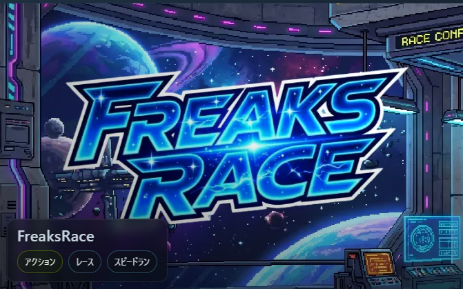

クリエイティブ
えもじふしぎばこ
えもじを組み合わせて、かわいい・リアルなどの画風を選ぶだけ。AIが絵とストーリーをつくります。
クリエイティブ
えもじを組み合わせて、かわいい・リアルなどの画風を選ぶだけ。AIが絵とストーリーをつくります。

コミュニケーション
おしゃべりどうぶつとやりとりする遊び。相手を想像する力の練習になります。

対話・表現
性格の違うキャラと会話。あいさつや自己紹介など、場面に合った言葉を選ぶ練習に。

アクションほか
近未来レースなど、反応や判断力を使うゲームも。好きなものから選べます。